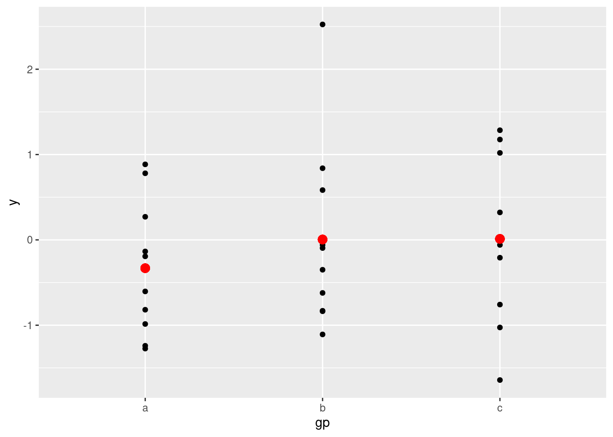

3 数据描述
3.0.1 数据的意义及获取
- 数据的类型：使用不同的标准，可将数据分成不同的类型，如数量型和质量型；
- 质量型(Categorical)：定类变量(Nominal)、定序变量(Ordinal)；
- 数量型(Numerical)：定距数据(interval data)、等比变量(ratio);
- 数据的获取：实验数据、观察数据、网络抓取及公用数据库(UCI,kaggle)等；
- datalist(datalist)汇集了多 个网站上的数据集;
- UCI数据库(uci dataset):创建于1987年，是一个比较有历史的数据集数据库，是一个含有数据库、领域知识及数据产生器的网站；
- Fastai(Fastai):进行图像分类、NLP及图像定位(image localization)的数据集；
- Kaggle(kaggle)：数据科学竞赛的主要网站；
- Sklearn(Skearn)：数据科学非常重要的包；
- 数据的产生过程：总体(有限、无限，未知）和样本（总体的子集，随机性，已知）；

- 表格型数据（结构化数据）：行(样本数量,rows), 列(变量名,columns)
## mpg cylinders displacement horsepower weight acceleration year origin
## 1 18 8 307 130 3504 12.0 70 1
## 2 15 8 350 165 3693 11.5 70 1
## 3 18 8 318 150 3436 11.0 70 1
## 4 16 8 304 150 3433 12.0 70 1
## 5 17 8 302 140 3449 10.5 70 1
## 6 15 8 429 198 4341 10.0 70 1
## name
## 1 chevrolet chevelle malibu
## 2 buick skylark 320
## 3 plymouth satellite
## 4 amc rebel sst
## 5 ford torino
## 6 ford galaxie 500
names(Auto) # 查看变量名## [1] "mpg" "cylinders" "displacement" "horsepower" "weight"
## [6] "acceleration" "year" "origin" "name"3.0.2 简单的数据汇总
## mpg cylinders displacement horsepower weight
## Min. : 9.00 Min. :3.000 Min. : 68.0 Min. : 46.0 Min. :1613
## 1st Qu.:17.00 1st Qu.:4.000 1st Qu.:105.0 1st Qu.: 75.0 1st Qu.:2225
## Median :22.75 Median :4.000 Median :151.0 Median : 93.5 Median :2804
## Mean :23.45 Mean :5.472 Mean :194.4 Mean :104.5 Mean :2978
## 3rd Qu.:29.00 3rd Qu.:8.000 3rd Qu.:275.8 3rd Qu.:126.0 3rd Qu.:3615
## Max. :46.60 Max. :8.000 Max. :455.0 Max. :230.0 Max. :5140
##
## acceleration year origin name
## Min. : 8.00 Min. :70.00 Min. :1.000 amc matador : 5
## 1st Qu.:13.78 1st Qu.:73.00 1st Qu.:1.000 ford pinto : 5
## Median :15.50 Median :76.00 Median :1.000 toyota corolla : 5
## Mean :15.54 Mean :75.98 Mean :1.577 amc gremlin : 4
## 3rd Qu.:17.02 3rd Qu.:79.00 3rd Qu.:2.000 amc hornet : 4
## Max. :24.80 Max. :82.00 Max. :3.000 chevrolet chevette: 4
## (Other) :365
mean(Auto$mpg)## [1] 23.44592样本平均值的计算：\[\bar{Y}=\frac{1}{n}\sum\limits_{i=1}^ny_i\]
样本的方差：\[s^2=\frac{1}{n-1}\sum\limits_{i=1}^n(x_i-\bar{x})^2\]
线性相关系数：\[r=\frac{\sum\limits_{i=1}^n(x_i-\bar{x})(y_i-\bar{y})}{\sqrt{\sum\limits_{i=1}^n(x_i-\bar{x})^2}\sqrt{\sum\limits_{i=1}^n(y_i-\bar{y})^2}}\]
-
课堂练习： 统计7位同学周未的学习时间，数据为：8，11，7，13，9，5，9，计算同学学习时间的均值，中位数、四分位数、标准差和极差（使用手算）。
- \(\bar{x}=\frac{8+11+7+13+9+5+9}{7}=8.85\)
- \(s^2=\frac{(8-8.85)^2+\cdots+(9-8.85)^2}{7-1}=6.81\)
- \(s=\sqrt{s^2}=\sqrt{6.81}=2.6\)
- Median = 9; Mode = 9; Range = Max - min = 13-5=8
## [1] 8.857143
median(d)## [1] 9
mode(d)## [1] "numeric"
quantile(d)## 0% 25% 50% 75% 100%
## 5.0 7.5 9.0 10.0 13.0
sd(d)## [1] 2.6095063.0.3 数据的可视化
- 两个变量之间的关系：散点图(scatter)
2. 描述数量变量数据分布情况的图形：直方图(histogram)
 3. 描述数量变量数据分布情况的图形：盒形图或箱线图(boxplot)
3. 描述数量变量数据分布情况的图形：盒形图或箱线图(boxplot)
boxplot(Auto$horsepower)
 4. 把一些数目以矩形形式显示, 表面上类似于直方图, 但直方图是描述连续数量变量的, 而条形图描述离散变量或分类变量各个水平计数(频数):条形图(barplot)。
4. 把一些数目以矩形形式显示, 表面上类似于直方图, 但直方图是描述连续数量变量的, 而条形图描述离散变量或分类变量各个水平计数(频数):条形图(barplot)。
# Simple Bar Plot
counts <- table(mtcars$gear)
barplot(counts, main="Car Distribution",
xlab="Number of Gears")- ggplot2(ggplot2):ggplot2是一个用于声明性地创建图形的系统，基于图形语法。你提供数据，告诉ggplot2如何将变量映射到美学上，使用什么图形基元，它就会处理好这些细节。
- 一个简单的ggplot2例子
library(ggplot2)
ggplot(mpg, aes(displ, hwy, colour = class)) +
geom_point()
# Generate some sample data, then compute mean and standard deviation
# in each group
df <- data.frame(
gp = factor(rep(letters[1:3], each = 10)),
y = rnorm(30)
)
ds <- do.call(rbind, lapply(split(df, df$gp), function(d) {
data.frame(mean = mean(d$y), sd = sd(d$y), gp = d$gp)
}))
# The summary data frame ds is used to plot larger red points on top
# of the raw data. Note that we don't need to supply `data` or `mapping`
# in each layer because the defaults from ggplot() are used.
ggplot(df, aes(gp, y)) +
geom_point() +
geom_point(data = ds, aes(y = mean), colour = 'red', size = 3)
- 漂亮图形的几大要素：
- 数据类型（Data Component）: 不同的数据类型使用合适的图形来表示，条形图（离散型数据）、直方图（连续型数据）等。
- 几何要素（Geometric Component）: 根据数据选择合适的的图形scatter plot, line graphs, barplots, histograms, qqplots, smooth densities, boxplots, pairplots, heatmaps, etc.
- 坐标要素（Mapping Component）: 选择合适的横坐标和纵坐标.
- 刻度要素（Scale Component）:选择合适的刻度. linear scale, log scale, etc.
- 标识要素（Labels Component）: This include things like axes labels, titles, legends, font size to use, etc.
- Ethical Component: Here, you want to make sure your visualization tells the true story. You need to be aware of your actions when cleaning, summarizing, manipulating and producing a data visualization and ensure you aren’t using your visualization to mislead or manipulate your audience.